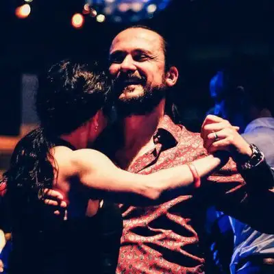
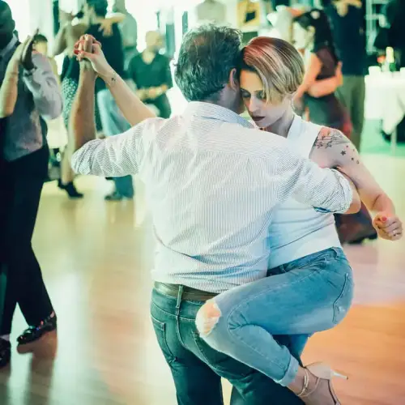

START HIERIk ben een Beginner
Nog nooit tango gedanst? Geen probleem! Ontdek onze 'Start-to-Tango' cursussen. Je hebt geen danspartner nodig om te beginnen.
INFO VOOR BEGINNERSONTDEK JE TANGO REIS
Welkom bij onze tangodansschool!
We bieden een breed scala aan lessen voor alle niveaus, van absolute beginners tot gevorderden.
Begin uw tango reis op het juiste niveau voor u

START HIERNog nooit tango gedanst? Geen probleem! Ontdek onze 'Start-to-Tango' cursussen. Je hebt geen danspartner nodig om te beginnen.
INFO VOOR BEGINNERS
Beheers je al de basis? Sluit je aan bij ons volgende niveau, First Year, Second Year, Intermediate of Advanced groepen. Verfijn je techniek, muzikaliteit en verbinding.
BEKIJK NIVEAUSWe hebben twee handige locaties in Brussel. Kies degene die het beste voor jou werkt.
BEKIJK LOCATIESLessen op beide locaties doorheen de week
Gatti de Gamond school
Rue du Marais 68, 1000 Brussel
Metro Botanique/Rogier
Lessen op maandag en woensdag
Details Brussel locatieGC Kontakt
Avenue Orban 54, 1150 Sint-Pieters-Woluwe
Metro Stockel
Lessen op dinsdag en donderdag
Details Woluwe locatieOnze drie-pijler benadering van tango educatie
Leer verschillende ritmes en orkesten te interpreteren. Ontwikkel je vermogen om te dansen wat je voelt in de muziek, en creëer je eigen unieke expressie in het moment.
Beheers de juiste houding, omhelzing en partnercommunicatie. Bouw de technische basis die zorgt voor moeiteloos leiden en volgen.
Leer in een ontspannen, ondersteunende omgeving met ervaren docenten. We bieden duidelijke uitleg, individuele aandacht en een gestructureerd progressiepad.
Systematische progressie van je eerste stappen tot gevorderde meesterschap
Geen ervaring nodig - 14 lessen
Start je tango reis hier. Onze beginnersreeks is ontworpen voor mensen zonder eerdere tango-ervaring. Je leert:
Belangrijk: Je hebt geen danspartner nodig om te starten. Onze beginnersreeks start tweemaal per jaar (september en februari).
Na afronding beginners - ~15 lessen ervaring
Voor dansers die de beginnerscursus hebben afgerond. Focus op uitbreiding van je basis:
Beschikbaarheid: Woensdag 18:30 (Brussel) en Donderdag 18:30 (Woluwe)
1,5 - 2,5 jaar ervaring
Voortbouwend op je solide basis. Introductie van complexere bewegingen:
Beschikbaarheid: Maandag 19:00 (Brussel) en Dinsdag 19:00 (Woluwe)
Brugklasse - 2 tot 3 jaar ervaring
Een brug naar gevorderd niveau. Sneller tempo en meer complexiteit:
Beschikbaarheid: Woensdag 19:30 (Brussel) en Dinsdag 20:00 (Woluwe)
4+ jaar ervaring
Voor ervaren dansers klaar om hun kunstenaarschap te verfijnen. Geavanceerde technieken en muzikaliteit:
Beschikbaarheid: Woensdag 20:30 (Brussel) en Donderdag 20:30 (Woluwe)
Probeer een gratis proefles en ervaar de magie van Argentijnse tango